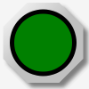
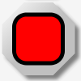
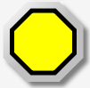

MBLogic
for an open world in automation
MBLogic
for an open world in automation
Help - HMI Pilot Light
Overview:
  
Pilot lights display information by changing colour when the data they are associated with changes. They may be simple two colour pilot lights to represent on/off conditions, or they may have multiple colours to represent different integer values.
A "pilot light" can be more that a simple geometric shape. It can be any graphic element whose "fill" property can be manipulated. This includes drawings or schematic representations of equipment,
SVG Graphics Library
Common Definitions
Pilot lights make use of a decorative "nut", which in turn makes use of a silver colour gradient and a drop shadow filter.
<!-- These are some definitions which are used below. --> <defs> <linearGradient id="MB_SilverGradient" x1="1" y1="1" x2="0" y2="0"> <stop offset="50%" stop-color="silver" /> <stop offset="100%" stop-color="white" /> </linearGradient> <!-- The following filter is used to add a drop shadown. --> <filter id="MB_DropShadowFilter"> <feGaussianBlur stdDeviation="2"> </feGaussianBlur> </filter> </defs>
<defs> <!-- This is a decorative octagonal nut. --> <g id="MB_NUT"> <polygon transform="translate(5,5)" fill="grey" stroke="none" filter="url(#MB_DropShadowFilter)" points="18,-45 -18,-45 -45,-18 -45,18 -18,45 18,45 45,18 45,-18 18,-45" /> <polygon fill="url(#MB_SilverGradient)" stroke="none" points="18,-45 -18,-45 -45,-18 -45,18 -18,45 18,45 45,18 45,-18 18,-45" /> </g> </defs>
Round Pilot Lights
A round pilot light is a simple circle.
<defs> <!-- Circular pilot light. r = 35 px--> <g id="MB_PilotLightRound"> <!-- This is a decorative nut. --> <use xlink:href="#MB_NUT"/> <!-- This is the part which changes colour. --> <circle cx="0px" cy="0px" r="35px" stroke="black" stroke-width="5px"/> </g> </defs>
Square Pilot Lights
A square pilot light is a simple rectangle with rounded corners.
<defs> <!-- Rectangular pilot light with rounded corners. 60 x 60 px --> <g id="MB_PilotLightSquare"> <!-- This is a decorative nut. --> <use xlink:href="#MB_NUT"/> <!-- This is the part which changes colour. --> <rect x="-30" y="-30" width="60" height="60" rx="15" stroke="black" stroke-width="5px" /> </g> </defs>
Octagonal Pilot Lights
An octagonal pilot light is a simple polygon.
<defs> <!-- Octagonal pilot light. --> <g id="MB_PilotLightOctagonal"> <!-- This is a decorative nut. --> <use xlink:href="#MB_NUT"/> <!-- This is the part which changes colour. --> <polygon stroke="black" stroke-width="5px" points="13,-35 -13,-35 -35,-13 -35,13 -13,35 13,35 35,13 35,-13 13,-35" /> </g> </defs>
Arbitrary Shapes
As well as the above pre-defined graphics, a pilot light may be made from any arbitrary graphic whose "fill" (colour) property can be manipulated. This includes custom graphics created for a particular application.
Creating Pilot Lights
To turn the graphics into active pilot lights, the graphics must be combined with some Javascript scripting, and possibly some text labels.
Each pilot light will have the following components:
- A locating transform. This is a statement used to position the pilot light in the desired location. For example: transform="translate(100,0)" will move the pilot light to X=100 and Y=0. Note that transformations may be nested.
- A unique "id" label which allows the pilot light to be addressed by one of the Javascript pilot light library functions. E.g. <g id="PL1">
- Either a reference to the library, or a user created graphic made from basic SVG elements. For example: <use xlink:href="#MB_PilotLightRound" />
- A Javascript code object which uses the "id" to address and update the "fill" property from the display list (or from user created custom code). This is normally located in the main Javscript section at the end of the web page.
Simple Pilot Lights:
SVG
The following creates the graphics for four pilot lights called "PL1", "PL2", "PL3", and "ServerStat". These are a standard round, square, and octagonal pilot lights respectively, plus a custom pilot light made from a basic SVG element (a rectangle in this case).
<g transform="translate(835,110)"> <!-- The first pilot light is a circle. --> <g id="PL1"> <use xlink:href="#MB_PilotLightRound" /> </g> </g> <g transform="translate(835,210)"> <!-- This shows a rectangular pilot light with rounded corners. --> <g id="PL2"> <use xlink:href="#MB_PilotLightSquare" /> </g> </g> <g transform="translate(835,310)"> <!-- This shows a octagonal pilot light. --> <g id="PL3"> <use xlink:href="#MB_PilotLightOctagonal" /> </g> </g> <!-- This is the server status light. --> <g transform="translate(25,10)"> <rect id="ServerStat" x="0" y="0" width="200" height="40" rx="15" fill="black" stroke="black" stroke-width="5px" /> <text x="10" y="30" font-size="24">Comm Status:</text> </g>
Javascript
The following Javacript code would be located in the main Javascript section at the end of the web page. We create a new Javascript code object for each pilot light and add it to the "display list" to allow it to be automatically updated during each communications scan cycle.
// This defines a pilot light control. var PL1 = new MB_PilotLight(document, "PL1", "black", "green", "red"); var PL2 = new MB_PilotLight(document, "PL2", "black", "green", "red"); var PL3 = new MB_PilotLight(document, "PL3", "black", "blue", "yellow"); // Now, add each of these screen objects to the list of things to update. MBHMIProtocol.AddToDisplayList(PL1, "PL1", "read"); MBHMIProtocol.AddToDisplayList(PL2, "PL2", "read"); MBHMIProtocol.AddToDisplayList(PL3, "PL3", "read"); // This is for the server status display on the main screen. var ServerStat = new MB_PilotLightStat(document, "ServerStat", "black", "green", "red", "ok"); MBHMIProtocol.AddToDisplayList(ServerStat, "stat", "stat");
Javascript Library Functions:
The following Javascript library functions are useful for this feature:
- MB_PilotLight
How it works:
The above example shows how to create pilot lights using the standard simple SVG library or by using simple geometric shapes. There is a circle (PL1), a square (PL2), a octagon (PL3), and an elongated rectangle with a text label (ServerStat).
Each pilot light must have a Javascript object created to control it. The MB_PilotLight object needs an "id" reference to the SVG graphic (e.g. id="PL1"), and three colours. The first colour is the default which is used when the object is initialised. If the system fails to start due to an error (e.g. a programming error), this default value will be displayed instead of the normal ones. The other two colours are the ones which are displayed to represent a 0 (false) or 1 (true) state.
Each pilot light object must then be added to the display list by calling MBHMIProtocol.AddToDisplayList. AddToDisplayList must be given the pilot light object, the tag name, and the source of the data. If the source of the data is a normal read from the server, the last parameter is "read". If the source is some other protocol item, then that name is used. In this case, "stat" is used for the ServerStat pilot light in order to read the communications status.
In this example, the pilot light "id" names for the first three pilot lights were made to be the same as the protocol tag names. This is not necessary, but was convenient in this case. The fourth pilot light (ServerStat) used a different name for the SVG "id" name than for the protocol tag.
Multi-Colour Pilot Lights:
A multi-colour pilot light will assume a variety of colours corresponding to an integer value. The colours are specified by creating an array of colour names and using the monitored value as an index to the array. The actual SVG elements are the same as for ordinary two colour pilot lights. The only difference is that a different Javascript object is used to control it.
SVG
<!-- This is another round pilot light. --> <g transform="translate(300,225)"> <g id="PL4"> <use xlink:href="#MB_PilotLightRound" /> </g> </g>
Javascript
// Create the list of colours. var ColourList = ["red", "orange", "yellow", "green", "blue", "indigo", "violet"]; // Create the object. var PL4 = new MB_PLMultiColour(document, "PL4", "black", ColourList); // Add it to the display list. MBHMIProtocol.AddToDisplayList(PL4, "PL4", "read");
Javascript Library Functions:
The following Javascript library functions are useful for this feature:
- MB_PLMultiColour
How it works:
The multi-colour pilot light is similar to the normal two colour type except it uses MB_PLMultiColour to create the Javascript object. Instead of specifying on and off colours, it accepts an array of colours. The first colour in the array corresponds to integer 0, the second to integer 1, the third to integer 2, etc.
Status Pilot Lights:
A status pilot light differs from a regular pilot light in that it compares the value of the tag is it monitoring to a reference value. If the monitored value matches the reference value, the pilot light turns on. If it does not match, the pilot light turns off.
SVG
<!-- This is the server status light. --> <g transform="translate(25,10)"> <rect id="ServerStat" x="0" y="0" width="200" height="40" rx="15" fill="black" stroke="black" stroke-width="5px" /> <text x="10" y="30" font-size="24">Comm Status:</text> </g>
Javascript
// This is for the server status display on the main screen. var ServerStat = new MB_PilotLightStat(document, "ServerStat", "black", "green", "red", "ok"); MBHMIProtocol.AddToDisplayList(ServerStat, "stat", "stat");
Javascript Library Functions:
The following Javascript library functions are useful for this feature:
- MB_PilotLightStat
How it works:
The status pilot light is similar to the other pilot lights, except the function accepts an additional parameter as the reference parameter ("ok" in this example). In this example the pilot light monitors the communications status ("stat") instead of a normal address tag. This allows it to signal when a communications error is present.
Illuminated Push Buttons:
Illuminated push buttons are described in the section on push buttons. See that page for more details.
Controlling Pilot Lights Directly:
Pilot lights would normally be controlled through the display list. However, it is also possible to control them directly via custom Javascript.
SVG
<!-- This is the server status light. --> <g transform="translate(25,60)"> <rect id="CommWatchDog" x="0" y="0" width="200" height="40" rx="15" fill="black" stroke="black" stroke-width="5px" /> <text x="10" y="30" font-size="20">Comm Watchdog:</text> </g>
Javascript
// This is for the communications watch dog display. We *don't* add // this to the display list. Rather, we manipulate it directly. var CommWD = new MB_PilotLight(document, "CommWatchDog", "black", "green", "red");
The following code is called regularly as part of the normal scan cycle.
// Check the comms watch dog counters.
ComsTimeOut = MBHMIProtocol.CommsWatchDogTimeOut(10);
if (ComsTimeOut) {
CommWD.UpdateScreen(1);
} else {
CommWD.UpdateScreen(0);
}
Javascript Library Functions:
The following Javascript library functions are useful for this feature:
- MB_PilotLight
- MB_PLMultiColour
- MB_PilotLightStat
How it works:
The display list controls pilot lights by calling their "UpdateScreen" method with a data value as a parameter. In this example, the pilot light object is called directly (e.g. "CommWD.UpdateScreen(1)") with 0 or 1 as a parameter. This permits simple control in applications where the normal display list does not offer the functionality desired.